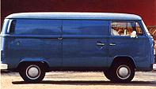
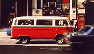
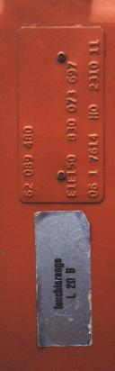

|
| |||||||||||||||||||||||||||
| D | Production date | C | Chassis Number | M | M-codes (optional extra's) | T | Transmission and Engine type | ||||
| E | Export Destination | P/I | Paint and Interior Color | X | Model Type | U | Unknown code |
Color lower part: Neptune Blue (J6) |
 | |
Color lower part: Senegal Red (G9) |
 | |
It's not clear why VW used special paint codes for Westfalia campmobiles. The colors on these busses are actually standardcolors, but are indicated by a special code.
 For each color I listed two different types of codes. The first one is the 'plate code'. This is the code as it is printed on the M-plate. The second code is the 'color code'. Volkswagen usesthis number to note colors in their literature (e.g. archives and for ordering paint). You canalso find this code in your car. It is printed on the silver sticker which is fixed below the M-plate.
The picture on the left shows the position of the M-plate and the sticker in a 1976 bus. The plate reads "E1E1" (color lower and upper part is "Bright Orange"). The sticker says "leuchtorange L 20 B". This is the German name for the color. "L 20 B" is the color code.
If the plate in your bus lists a code not listed below, please let me know:
| Plate code | Color code | German name | English name | Remarks |
|---|---|---|---|---|
| 0101.. | L53H | orientblau | Orient Blue | |
| 0106.. | L53H L90D | Bottom: Orientblau Upper half: Pastellweiß | Bottom: Orient Blue Upper half: Pastel White | Color combination for microbuses (type 22) |
| 0202.. | L620 | savannenbeige | savanna beige | 1968-1970 |
| 0202.. | L30B | kasanrot | ? red | 1973-1975 |
| 0206.. | L30B L90D | Bottom: Kasanrot Upper half: Pastellweiß | Bottom: ? Red Upper half: Pastel White | Color combination for microbuses (type 22 and 24) (1973-1975) |
| 0261.. | L620 L581 | bottom: savannenbeige roof: wolkenweiß |
bottom: savanna beige roof: cloud white | color combination for microbuses (type 22 and 24) (1968-1970) |
| 0303.. | L31H | chiantirot | chianti red | |
| 0310.. | L31H ? | bottom: chiantirot upper half: schwarz |
bottom: chianti red upper half: black | color combination for microbuses (type 22 and 24) (1971-1972) |
| 0404.. | L11H | sierragelb | sierra yellow | |
| 0406.. | L11H L90D | bottom: sierragelb upper half: pastellweiß |
bottom: sierra yellow upper half: pastel white | color combination for microbuses (type 22 and 24) |
| 0410.. | L11H ? | bottom: sierragelb upper half: schwarz |
bottom: sierra yellow upper half: black | color combination for microbuses (type 22 and 24) (1971-1972) |
| 0505.. | L53D | niagarablau | niagara blue | |
| 0506.. | L53D L90D | bottom: niagarablau upper half: pastellweiß |
bottom: niagara blue upper half: pastel white | color combination for microbuses (type 22 and 24) |
| 0510.. | L53D ? | bottom: niagarablau upper half: schwarz |
bottom: niagara blue upper half: black | color combination for microbuses (type 22 and 24) (1971-1972) |
| 0606.. | L90D | pastellweiß | pastell white | |
| 0610.. | L11H ? | bottom: pastellweiß upper half: schwarz |
bottom: pastel white upper half: black | color combination for microbuses (type 22 and 24) (1971-1972) |
| 0706.. | L20B L90D | bottom: leuchtorange upper half: pastellweiß |
bottom: brilliant orange upper half: pastel white | color combination for microbuses (type 22 and 24) |
| 0707.. | L20B | leuchtorange | brilliant orange | |
| 0906.. | L20B L90D | bottom: ulmengrün upper half: pastellweiß |
bottom: elm green upper half: pastel white | color combination for microbuses (type 22 and 24) |
| 0909.. | L60D | ulmengrün | elm green | |
| 0910.. | L60D ? | bottom: ulmengrün upper half: schwarz |
bottom: elm green upper half: black | color combination for microbuses (type 22 and 24) (1971-1972) |
| 1313.. | L87 | perlweiß | pearl white | |
| 1706.. | L61B L90D | Bottom: Sumatragrün Upper half: Pastellweiß | Bottom: Sumatra Green Upper half: Pastel White | Color combination for microbuses (type 22 and 24) |
| 1717.. | L61B | sumatragrün | Sumatra Green | |
| 2006.. | L13H L90D | Bottom: Ceylonbeige Upper half: Pastellweiß | Bottom: Ceylon Beige Upper half: Pastel White | Color combination for microbuses (type 22 and 24) |
| 2020.. | L13H | ceylonbeige | Ceylon Beige | |
| 2222.. | L610 | deltagrün | Delta Green | |
| 2261.. | L610 L581 | Bottom: Deltagrün Roof: Wolkenweiß | Bottom: Delta Green Roof: Cloud White | Color combination for microbuses (type 22 and 24) |
| 3838.. | L512 | samtgrün | velvet Green | |
| 4141.. | L345 | lichtgrau | light Grey | |
| 4242.. | L282 | lotosweiß | lotus white | |
| 4343.. | L555 | tizianrot | titian red | |
| 4361.. | L555 L581 | bottom: tizianrot roof: wolkenweiß |
bottom: titian red roof: cloud white | color combination for microbuses (type 22 and 24) |
| 4646.. | L567 | elfenbein (RAL 1014) | ivory (RAL 1014) | |
| 4747.. | L50K | neptunblau | neptune blue | |
| 4761.. | L50K L581 | bottom: neptunblau roof: wolkenweiß |
bottom: neptune blue roof: cloud white | color combination for microbuses (type 22 and 24) |
| 4803.. | L86Z | ? | agata brown | sales campaign (Mcode S723) chassis nr. 2x7 2118 500 - 2x72 300 000 (1977) |
| 4817.. | LH8A | dattelbraun | date brown | |
| 4831.. | L86Z | ? | agata brown | sales campaign (Mcode S765) |
| 4991.. | ? | silberfisch | silverfish (metallic paint) | |
| 4949.. | ? | grundiert | primer | |
| 52x006 | L41 L282 | bottom: ebenholzschwarz roof: lotosweiß |
bottom: ??-woodblack roof: lotus white | color combination for taxis (type 22 and 24) |
| 52x115 | ? | elfenbein (RAL 1014) | ivory (RAL 1014) | for ambulances |
| 52x200 | ? | orange (RAL 2000) | orange (RAL 2000) | for road works vehicles |
| 52x211 | ? | signalorange (RAL 2002) | signal orange (RAL 2002) | |
| 52x300 | ? | feuerwehrrot (RAL 3000) | fire brigade red (RAL 3000) | for fire trucks |
| 52x316 | ? | rubin | ? | |
| 52x544 | ? | bottom: blau (?) roof: weiß | bottom: dark blue(?) roof: white | code found on Dutch police vehicle |
| 52x614 | ? | polizeigrün (RAL 6009) | police green (RAL 6009) | for German Police Vehicles |
| 52x904 | ? | polizeiweiß | police white | |
| 521104 | ? | postgelb | mail yellow | colour for German mail vehicles (type 21) |
| 521115 | ? | ? | ? | |
| 521300 | ? | feuerwehrrot (RAL 3000) | fire brigade red (RAL 3000) | for fire trucks (type 21) |
| 521508 | ? | blau(?) | blue (?) | code found on German 1971 panelvan (type 21) |
| 521726 | ? | ? | army green | code found on a highroof 1969 Swiss armyvan(type 21) |
| 521920 | ? | ? | ? | |
| 522115 | ? | ? | ? | |
| 522325 | ? | bottom: tizianrot roof: weiß |
bottom: titian red roof: white | color combination found on 1968 microbus (type 28) |
| 522614 | ? | gelb (RAL 1004) | yellow (RAL 1004) | code only for microbuses (type 22) |
| 522703 | ? | lichtgrau | light grey (?) | code only for microbuses (type 22) |
| 523134 | ? | gelb (?) | yellow (?) | color found on German 1971 kombi (type 23) |
| 523184 | L11H | sieragelb | sierra yellow | code for Westfalia campmobiles (type 23) |
| 523185 | - | sieragelb/pastellweiß | sierra yellow/pastell white | code for Westfalia campmobiles (type 23) |
| 523300 | ? | feuerwehrrot (RAL 3000) | fire brigade red (RAL 3000) | for fire trucks (type 23) |
| 523324 | ? | ? | ? | code for Westfalia campmobiles (type 23)(?) |
| 523330 | ? | ? | ? | |
| 523331 | L30H | montanarot | montana red | code for Westfalia campmobiles (type 23) |
| 523337 | L31H | chiantirot | chianti red | code for Westfalia campmobiles (type 23) |
| 523338 | - | chiantirot/pastellweiß | chianti red/pastell white | code for Westfalia campmobiles (type 23) |
| 523551 | L50K | neptunblau | neptune blue | code for Westfalia campmobiles (type 23) |
| 523562 | ? | brilliantweiß | ? | code for Westfalia campmobiles (type 23) |
| 523570 | ? | niagarablau | ? | code for Westfalia campmobiles (type 23) |
| 523571 | ? | niagarablau/pastellweiß | ? | code for Westfalia campmobiles (type 23) |
| 523642 | L512 | samtgrün | velvet green | code for Westfalia campmobiles (type 23) |
| 523672 | ? | deltagrün | delta green | code for Westfalia campmobiles (type 23) |
| 523694 | ? | ulmengrün | elm green | code for Westfalia campmobiles (type 23) |
| 523695 | ? | ulmengrün/pastellweiß | elm green/pastell white | code for Westfalia campmobiles (type 23) |
| 523703 | ? | lichtgrau | light grey (?) | code for Westfalia campmobiles (type 23) |
| 523806 | L620 | savannenbeige | savanna beige | code for Westfalia campmobiles (type 23) |
| 523809 | ? | ? | ? | |
| 523811 | ? | kansasbeige | kansas beige | code for Westfalia campmobiles (type 23) |
| 523812 | ? | kansasbeige/pastellweiß | kansas beige/pastell white | code for Westfalia campmobiles (type 23) |
| 523904 | ? | polizeiweiß | police white | |
| 523907 | L87 | perlweiß | pearl white | code for Westfalia campmobiles (type 23) |
| 523917 | L282 | lotosweiß | lotus white | code for Westfalia campmobiles (type 23) |
| 523926 | L90D | pastellweiß | pastell white | code for Westfalia campmobiles (type 23) |
| 524006 | L41 L282 | bottom: ebenholzschwarz roof: lotosweiß |
bottom: ??-woodblack roof: lotus white | color combination for taxis |
| 526330 | ? | ? rot | ? red | code found on 1970 Canadian crewcab (type 26) |
| 6506.. | L91D L90D | bottom: kansasbeige upper half: pastellweiß |
bottom: kansas beige upper half: pastel white | color combination for microbuses (type 22 and 24) |
| 6510.. | L91D ? | bottom: kansasbeige upper half: schwarz |
bottom: kansas beige upper half: black | color combination for microbuses (type 22 and 24) (1971-1972) |
| 6565.. | L91D | kansasbeige | kansas beige | |
| 6761.. | L50H L581 | Bottom: Blau(?) Roof: Wolkenweiß | Bottom: Brilliant Blue Roof: Cloud White | |
| 6767.. | L50H | ? | brilliant blue ? | |
| 6861.. | L30H L581 | Bottom: Montanarot Roof: Wolkenweiß | Bottom: Montana Red Roof: Cloud White | Color combination for microbuses (type 22 and 24) |
| 6868.. | L30H | montanarot | montana Red | |
| 9006.. | ? | schwarz, dach und stoßstangen weiß | black, roof and bumpers white | Used on German taxi's |
| 9115.. | L567 | elfenbein | ivory | |
| 9135.. | ? | postgelb | mail yellow | Used on German mail vehicles |
| 9156.. | L20A | marinogelb | chrome yellow | Code only used on Westfalia campmobiles |
| 9157.. | L20A L90D | unter: marinogelb Oben: Pastell Weiß | Bottom: Chrome Yellow Top: Pastell White | Code only used on Westfalia campers |
| 9184.. | L11H | sierragelb | Sierra Yellow | Code only used on Westfalia campers |
| 9191.. | ? | elfenbein (RAL 1015) | Ivory (RAL 1015) | Code used for German Taxi's |
| 9199.. | ? | gelb? | yellow? | |
| 9713.. | ? | Bundesbahngrau? (Bundesbahn farb?) | Grey? (German-Railways colour?) | |
| 9922.. | ? | ? | White? | Code for Swiss Mail vehicles? |
| 9226.. | L20B | leuchtorange | Brilliant Orange | Code only used on Westfalia campers |
| 9227.. | L20B L90D | Bottom: Leuchtorange Top: Pastellweiß | Bottom: Brilliant Orange Top: Pastell White | Code only used on Westfalia campers |
| 9300.. | ? | rot (RAL 3000) | red (RAL 3000) | Code for German Fire-Trucks |
| 9451.. | L63H | taigagrün | sage Green | Code only used on Westfalia campers |
| 9452.. | L63H L90D | Bottom: Taigagrün Top: Pastellweiß | Bottom: Sage Green Top: Pastell White | Code only used on Westfalia campers |
| 9603.. | ? | ? | ? | |
| 9609.. | ? | ? | Army Green | Code for army vehicles |
| 9610.. | 319 | grün 319 | Green 319 | Code for German Army vehicles (Bundeswehr) |
| 9612.. | ? | ? | Army Green | Code for army vehicles |
| 9645.. | ? | ? | ? | |
| 9648.. | L65K | ravennagrün | ravenna green | Code only used on Westfalia campers |
| 9703.. | ? | orange??? | orange??? | Code only used on Westfalia campers |
| 9826.. | L13A | dakotabeige | dakota beige | Code only used on Westfalia campers |
| 9830.. | L13A L90D | Bottom: dakotabeige
Upper half: pastellweiß | Bottom: Dakota Beige Upper half: Pastell White | Code only used on Westfalia campers |
| 9832.. | LE1M | mexicobeige | mexico beige | |
| 9922.. | ? | ? | ? | Code for Swiss mail vehicles (?) |
| 9926.. | L90D | pastellweiß | pastel white | Code only used on Westfalia campers |
| A7A7.. | L345 | lichtgrau | light grey | |
| B1B1.. | L62H | ? | bali yellow | |
| B9B9.. | L567 | elfenbein | ivory | |
| A9A9.. | ? | grundiert | primer | |
| D1D1.. | L13H | ceylonbeige | ceylon beige | |
| D1R1.. | L13H L90D | bottom: ceylonbeige upper half: pastellweiß |
bottom: ceylon beige upper half: pastel white | color combination for microbuses (type 22) |
| D5D5.. | L13A | dakotabeige | dakota beige | (1978) |
| D9D9.. | LE1M | mexicobeige | mexico beige | |
| E1E1.. | L20B | leuchtorange | brilliant orange | |
| E1R1.. | L20B L90D | bottom: leuchtorange upper half: pastellweiß |
bottom: brilliant orange upper half: pastel white | Color combination for microbuses (type 22) |
| E6E6.. | L20A | marinogelb | chrome yellow | until Chassis nr 2x7 2079871 |
| L21H | marinogelb | chrome yellow | from chassis nr 2x7 2079872 on | |
| E9E9.. | L12A | panamabraun | panama brown | |
| G1G1.. | L30B | kasanrot | kasan red | |
| G1R1.. | L30B L90D | bottom: kasanrot upper half: pastellweiß |
bottom: kasan red upper half: pastel white | color combination for microbuses (type 22) |
| G9G9.. | L31A | senegalrot | senegal red | |
| J2J2.. | L53H | orientblau | orient blue | |
| J2R1.. | L20B L90D | bottom: orientblau upper half: pastellweiß | Bottom: Orient Blue Upper half: Pastel White | Color combination for microbuses (type 22) |
| J4J4.. | L57H | ozeanblau | reef blue | |
| J6J6.. | L50K | neptunblau | neptune blue | |
| M4M4.. | L61B | sumatragrün | sumatra green | |
| M4R1.. | L61B L90D | bottom: sumatragrün upper half: pastellweiß |
bottom: sumatra green upper half: pastel white | color combination for microbuses (type 22) |
| P4P4.. | L63H | taigagrün | sage green | |
| R1R1.. | L90D | pastelweiß | pastell white | |
| T1T1.. | L86Z | ? | agata brown |
The last two digits (XXXXXX)indicate the color of the interior. Let me know if youcan give me more info on the numbers and names of the colors: molenari@hotmail.com
| VW code | Material | German name | English Name | Remarks |
|---|---|---|---|---|
| ....0? | cloth? | flockalabaster(?) | ? | (1973) Mcode 53 |
| ....07 | leatherette | ? | ? | |
| ....09 | cloth | ? | camping red | |
| ....14 | leatherette | ? | ? | |
| ....15 | leatherette | ? | ? | |
| ....25 | leatherette | ??? grau | ??? grey | |
| ....26 | leatherette | ? | ??? beige | (-1969-) |
| ....30 | ? | ? | ? | |
| ....33 | leatherette | hellgrau-mittelgrau | light grey/medium grey | (1968-1970) |
| ....33 | cloth | ? | camping red | (1973-1975) |
| ....33 | cloth | ? | green yellow | (1979) |
| ....34 | leatherette | hellsand | light sand | (1968) |
| ....34 | leatherette | hellsand-khakibraun | light sand/khaki brown | (1969-1970) |
| ....34 | cloth | ? | camping green yellow | (1976-1978) |
| ....35 | leatherette | dunkelblau | dark blue | |
| ....36 | leatherette | beige | beige | |
| ....37 | ? | ? | ? | |
| ....40 | leatherette | schwarz | black | (1971-1972) |
| ....40 | cloth | ? | camping green | (1973-1975) |
| ....40 | cloth | ? | green red | (1979) |
| ....41 | leatherette | indischrot | indian red | (1968) |
| ....41 | cloth | ? | camping green red | (1976-1978) |
| ....42 | leatherette | ? | grey/beige (?) | |
| ....44 | ? | ? | ? | |
| ....45 | leatherette | ? | medium grey | |
| ....46 | cloth | ? | camping brown beige | |
| ....47 | leatherette | galarot | gala red | |
| ....47 | cloth | ? | brown beige | (1979) |
| ....49 | cloth | ? | camping red | |
| ....50 | leatherette | schwarz | black | |
| ....51 | leatherette | dunkelbeige | dark beige | |
| ....52 | leatherette | alabaster | alabaster (grey) | |
| ....53 | leatherette | kork | cork | |
| ....55 | leatherette | lederbeige | leather beige | |
| ....60 | leatherette | gala rot | gala red | |
| ....61 | leatherette | ? | medium grey | |
| ....77 | leatherette | ? | canyon brown | |
| ....84 | ? | ? | ? | |
| ....90 | cloth | ? | ? | (Mcode 106) |
| ....EB | cloth | ? | camping green yellow | |
| ....EC | cloth | ? | camping green red | |
| ....ED | cloth | ? | camping brown beige | |
| ....K2 | cloth | ? | parchment (beige-grey) | |
| ....M9 | leatherette | ? | slate | |
| ....N1 | leatherette | ? | juniper (green) | |
| ....N2 | leatherette | ? | tapis Blue | |
| ....N3 | leatherette | ? | bamboo (beige) | |
| ....NM | leatherette | ? | black | |
| ....NP | leatherette | ? | canyon brown | |
| ....NS | leatherette | ? | alabaster (grey) | |
| ....V1 | cloth | ? | sienna (red brown) |
VW Transporter Brochure 8/67 (Dutch edition)
VW Transporter Brochure 1/75 (Dutch edition)
VW Microfiche
Photocopies that came with 'birth'-certificates from the VW-Museum
Late 70ties Westfalia brochure (Dutch edition)
The Type 2 list!!
And by investigating lots of Type 2's
Links:
The paint codes, the ones that start with an "L", were taken from Joel Walker's page:
I completed the interior codes list with help from Wolfsburgwest:
More additions were made in November 2000 with help from Alexander Prinz from T2ig:
Obviously this list is still not complete...
[top]
|
Last update: April 23rd, 2001 Copyright © 1997 Vincent Molenaar molenari@hotmail.com |
|
|